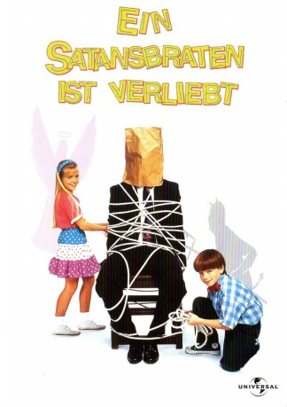

#11551 Ein Satansbraten ist verliebt
Alternativ: Problem Child 3: Junior in Love (Englischer Titel)
 
 IMDB-Wertung: 3.3 / 10
IMDB-Wertung: 3.3 / 10  Metascore: 0
Metascore: 0 
Der kleine Satansbraten ist wieder da - und er ist genauso frech und hinterhältig we eh und je! Endlich ist es seinem Vater gelungen, Junior zu überreden, sich mit anderen Kindern seines Alters abzugeben. Der Plan scheint vorerst zu funktionieren, denn der kleine Satansbraten findet vor allem am Tanzen Gefallen. Oder besser gesagt, an der wunderschönen, allseits beliebten Tiffany, in die er sich Hals über Kopf verliebt. Das es da noch andere Verehrer gibt, die ebenfalls Tiffanys Aufmerksamkeit erwecken und ihre Gunst gewinnen wollen, ist für Junior kein Problem: denn an gemeinen Einfällen, seiner Konkurrenz derartige Floussen aus dem Kopf zu schlagen, mangelt es ihm nicht...
Jahr: 1995
Dauer: 82 Minuten
FSK: 6
Land: USA Studio: NBCTonspuren:
Untertitel:
Auflösung: 1080p (1920x1080) Größe: 7833 MB
Genre: Komödie, Familie
Regisseur: Greg Beeman
Drehbuch: Scott Alexander, Larry Karaszewski, Michael Hitchcock
Soundtrack: David Michael Frank
Darsteller:
 William Katt als Ben Healy
William Katt als Ben Healy- Justin Chapman als Junior Healy
 Sherman Howard als Scoutmaster Phlim
Sherman Howard als Scoutmaster Phlim Eric Edwards als Murph / Bertha
Eric Edwards als Murph / Bertha- Blake McIver Ewing als Corky
- Jennifer Ogletree als Tiffany
- Brock Pierce als Duke
- Jake Richardson als Blade
 Gilbert Gottfried als Dr. Peabody
Gilbert Gottfried als Dr. Peabody Jack Warden als Big Ben
Jack Warden als Big Ben Ellen Albertini Dow als Lila Duvane
Ellen Albertini Dow als Lila Duvane Marianne Muellerleile als Miss Hicks
Marianne Muellerleile als Miss Hicks- Bruce Ed Morrow als Mr. Burtis
- Jacqueline Obradors als Conchita
- Monique Gabrielle als The Blonde
- Mosley Agin als Girl at Dance
 Rance Howard als The Janitor
Rance Howard als The Janitor- Carolyn Lowery als Dr. Gray
- Kelli Thacker als Nurse Kiki
- Joshua Gibran Mayweather als Biff
- Binh Nguyen als Buzz
- Clifford Happy als The Referee
- Rob Monroe als Rupert
- Marvin Krueger als The Judge
- Jarrod Quan als The Squirrel
- Jamie Lieberman als The Bunny
- Shelana Boyd als The Bird
- Paul Jones als Executioner (uncredited)
Datei: X:\3-Trilogie(N-Z)\Satansbraten\Satansbraten ist verliebt, Ein (1995, FSK6, 1920x1080).mkv seit 24.07.2019
Festplatte: HD Collection-3(N-Z)-6(A-Z)
 Alle Filme aus Gruppe '3-Trilogie(N-Z)\Satansbraten'
Alle Filme aus Gruppe '3-Trilogie(N-Z)\Satansbraten'